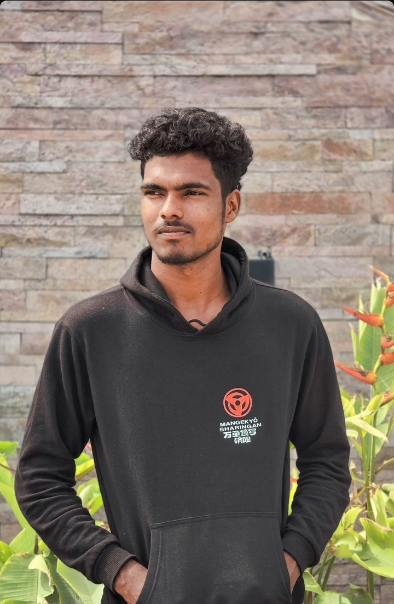
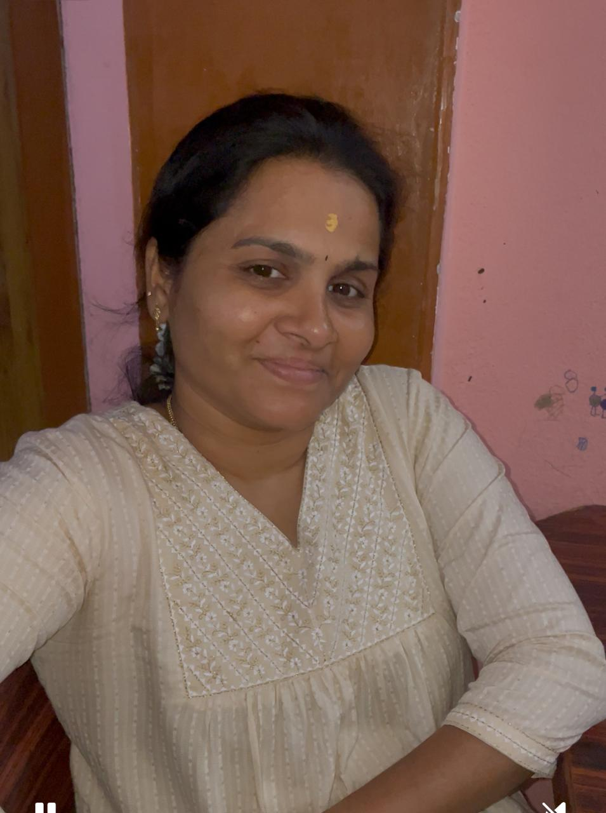

JayaKumar B
Founder & Architect
Leads client strategy, delivery standards and database modernization engagements.
Explore JayaKumar’s expertiseAbout Nilan DataBytes
We combine consulting judgment with hands-on engineering across database architecture, development, performance, migration and operations.
Our approach
Nilan DataBytes was built around a simple idea: database advice is most valuable when it is connected to practical delivery. We assess the environment, make risk visible, implement carefully and leave teams with a system they can understand and operate.
The team
Full biographies now live on the About page, keeping the homepage focused on customer needs and outcomes.
Founder & Architect
Leads client strategy, delivery standards and database modernization engagements.
Explore JayaKumar’s expertise
Database Developer
Builds optimized queries, database objects, reporting workflows and reliable data solutions.

Database Administrator
Handles monitoring, backups, maintenance, security checks and operational support.
Tutor & Mentor
Teaches practical database concepts, cloud platforms, migration and project scenarios.
What clients value
“His communication was very good, he met all deadlines, and he is very strong in SQL. He will absorb the pressure and make your life easy.” — Delivery Director, Voicera Analytics
Bring us the database issue your team needs to solve.